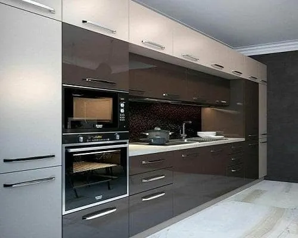
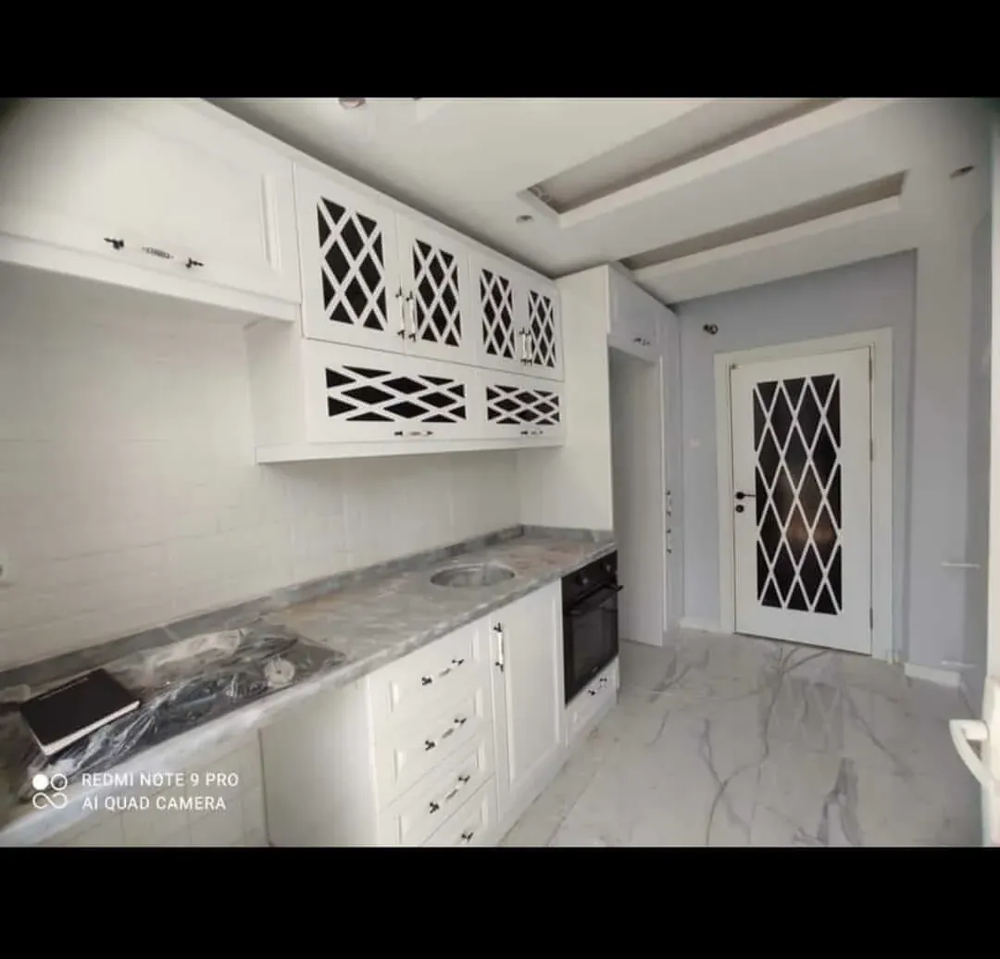
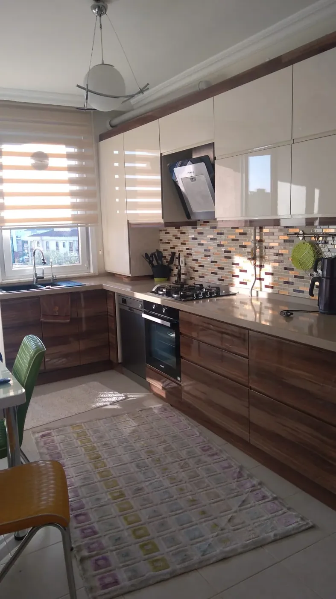

Raf sistemleri
Ayarlanabilir raf ve hazır iç düzenleyiciler; yüksekliği ihtiyaca göre değiştirmenizi kolaylaştırır.
Osmaniye’de ölçüye özel üretim — konut, otel ve proje işleri.
Ürün
Mutfak; yemek pişirdiğimiz, sohbet ettiğimiz ve en sık uğradığımız alandır. Burada özgür ve düzenli hissetmek için depolama net olmalıdır: tabak, tencere, bardak ve gıda malzemeleri uygun genişlikte, kolay erişilir raflarda yer alır.
Emin Kapı olarak mutfağı “katalogdan seçilen hazır paket” değil, mekânınıza göre üretilen bir sistem olarak ele alıyoruz. Fiyat ve plan detayı için ayrıca mutfak dolabı fiyat rehberimizi okuyabilirsiniz; bu sayfada imalat, malzeme ve kullanım tarafına odaklanıyoruz.
Süreç
| Adım | Ne yapıyoruz? |
|---|---|
| 1. Keşif | Yerinde ölçü; cihaz, lavabo ve elektrik noktalarını not alırız. |
| 2. Tasarım | Gövde/kapak malzemesi, renk ve iç düzeni kullanımınıza göre öneririz. |
| 3. İmalat | Atölyede ölçüye özel üretim; kalite kontrol. |
| 4. Montaj | Profesyonel montaj ve yerinde ayar. |
Kapsam
| Müşteri | Örnek iş |
|---|---|
| Konut / daire | Yeni mutfak veya yenileme; ölçüye özel dolap seti |
| Otel / pansiyon | Dayanıklı kullanım için tekrarlanabilir üniteler |
| Kurum & inşaat | Proje bazlı mutfak, yüklük ve vestiyer dolabı |
Galeri
Lake, CNC ve klasik çizgilerden seçkiler — tıklayınca büyür.





Malzeme
Görsel çeşitliliği çoğunlukla kapak yüzeyi sağlar; gövde dayanıklılığı taşır.
| Parça | Seçenekler | Pratik not |
|---|---|---|
| Gövde | 18 mm MDF, sunta, MDFlam | Uzun ömür için MDF tercih edilir |
| Kapak | Mat / parlak lake, membran, MDFlam, doğal ahşap kaplama | Her yüzey farklı ışık ve doku verir |
| Donanım | Menteşe, ray, kulp, iç düzenleyici | Günlük konforu belirler |
Hangi yüzeyin bütçenize nasıl yansıdığını fiyat rehberinde tablo halinde özetledik.
İç düzen
Dolap depolama için üretilir; raflar her zaman yetmez. İmalat aşamasında iç düzeni planlamak sonradan eklemeye göre daha temiz sonuç verir.
Ayarlanabilir raf ve hazır iç düzenleyiciler; yüksekliği ihtiyaca göre değiştirmenizi kolaylaştırır.
Tabak, baharat, temizlik ürünü gibi grupları ayırarak karmaşayı azaltır.
Tencere ve küçük ev aletleri için derin çekmece, kapaklı raftan daha hızlı erişim sağlar.
| Durum | Öneri |
|---|---|
| Yağ lekesi | Yağda çözünen sabun; yumuşak bez veya fırça. |
| Toz / kir birikimi | Aynı sabunlu karışımla nazikçe fırçalayın. |
| Genel silme | Seyreltilmiş sirke suyu kullanılabilir; ardından kurulayın. |
| Ahşap / kaplama | Yüzeyi ıslak bırakmayın; nem malzeme ömrünü kısaltır. |
Aşındırıcı temizleyici ve sert sünger kullanmayın.
Bu sayfada imalat ve kullanımı anlatıyoruz. Metraj, kapak tipi, tezgâh derinliği (genelde 60 cm cihazlar) ve donanımın maliyeti nasıl etkilediğini ayrı bir rehberde topladık — sabit liste fiyatı yayınlamıyoruz.
SSS
Ölçüye ve mekâna özel imalat yapıyoruz. Kullanım alışkanlıklarınız ve bütçenize göre gövde, kapak ve iç düzeni birlikte netleştiririz.
Konut, daire, otel, pansiyon; resmi kurum ve inşaat firmalarına mutfak, yüklük ve vestiyer dolabı imalatı sunuyoruz.
Yağ lekelerinde yağda çözünen sabun; genel temizlik için seyreltilmiş sirke suyu. Kurulayın; ahşabı ıslak bırakmayın.
Fiyat rehberinde faktörleri okuyun; net teklif ücretsiz keşif sonrası verilir. 0542 236 236 5 · 0532 461 95 97.
İmalat
Yerinde ölçü ve malzeme önerisi — 09:00–17:00.